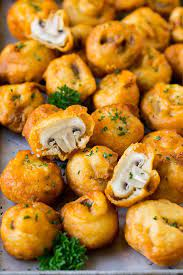

Deep Fried Mushrooms

fried mushrooms
Descriptiom
A very simple recipe that the whole family will enjoy.
These tasty golden brown bites of heaven will make an amazing
side to compliment any dish. Or enjoy on a cheat night and have
them as a meal all on their own, just don't forget the ranch.
Ingredients
- 1 pound small button mushrooms ends trimmed
- 1 1/2 cups all purpose flour divided use
- 1 cup beer
- 2 1/2 teaspoons kosher salt
- 3/4 teaspoons kosher salt
- 1/4 teaspoon garlic powder
1/4 teaspoon onion powder
- oil for frying
- 1 tablespoon fresh parsley chopped
Steps
- Heat 3 inches of oil in a deep pot to 375 degrees F.
- Coat the mushrooms in 1/2 cup flour, shaking off any excess.
- In a medium bowl, mix together the remaining cup of flour,
beer, salt, pepper, garlic powder and onion powder.
- Fry 4-5 mushrooms at a time until golden brown, about
7 minutes.
- Repeat the process with the remaining mushrooms.
- Sprinkle with parsley, then serve immediately.